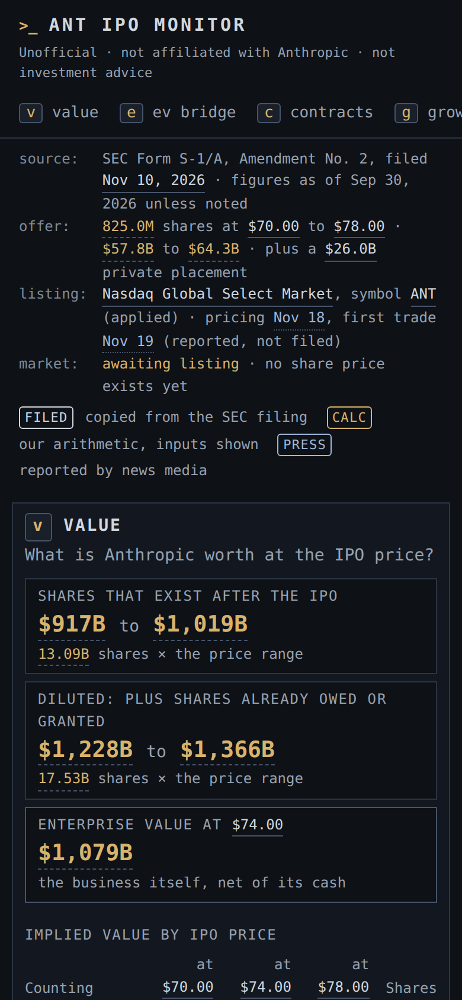
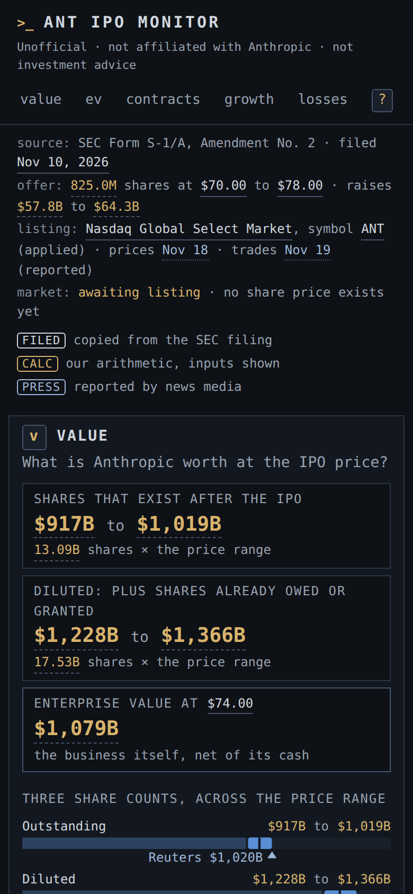
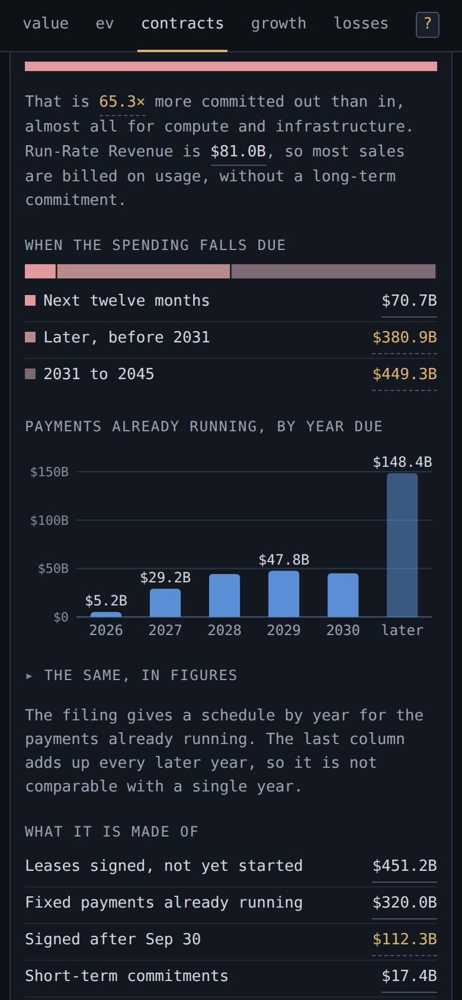
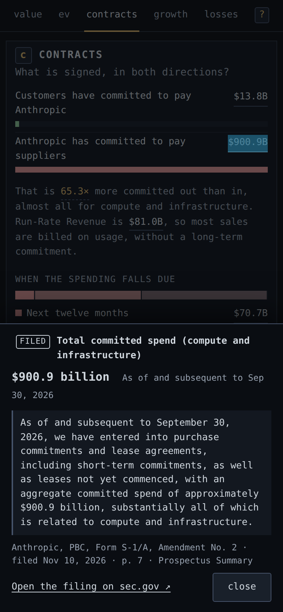
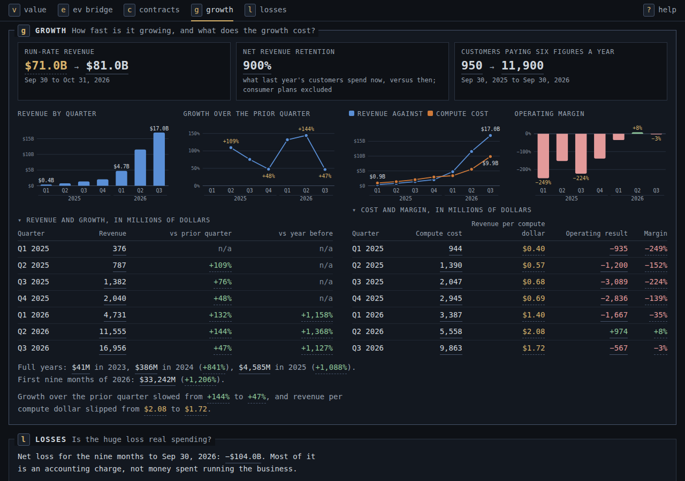
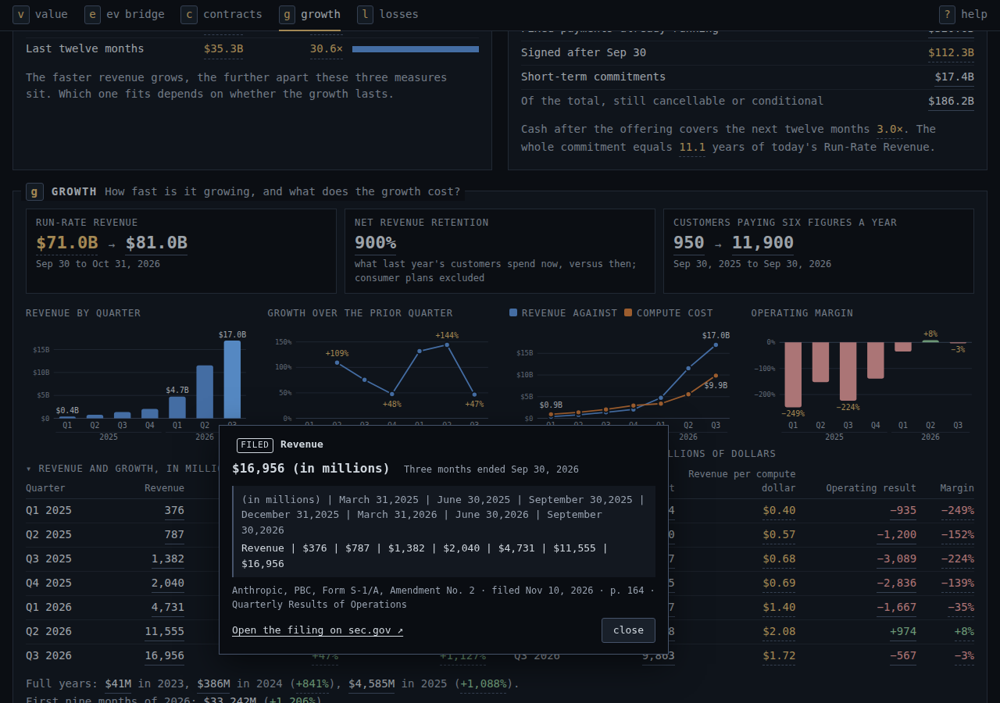
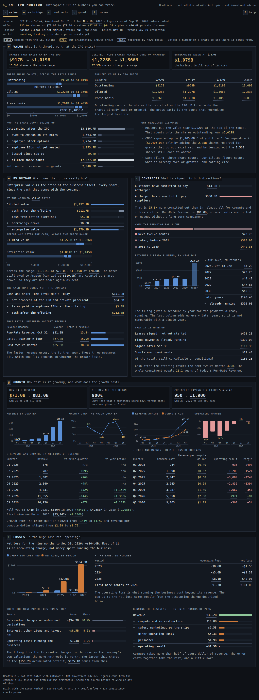
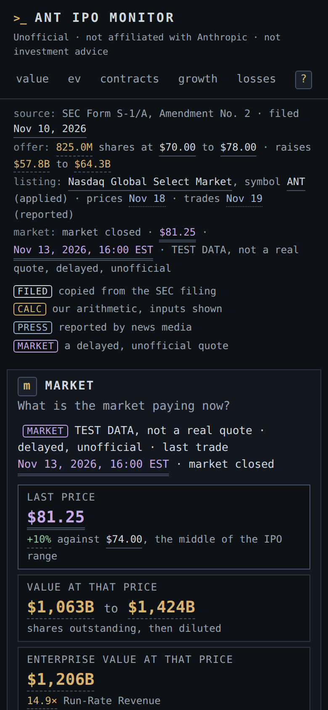

Loop 002 — Charts, a phone-first layout and a market panel ready for the first trade
2026-11-16 · Three releases in a day: charts and a layout made for phones (0.2.0), a market panel that waits for the first trade (0.3.0), and a change of market source after the first one refused the machine (0.3.1). Live at agmgd-on-ipo-monitor-ba4eccd0.fly.dev.
Why
I love it. It's clean. We could improve the layout and how it adapts to phones. Otherwise it is really good. Go!
Also, maybe some graphs, curves, charts and so on?
The owner spoke in French; these are their words reworded in English at their request, with the meaning unchanged. The market panel had been announced for this loop: the first trade is reported for 2026-11-19.
What changed
- Nine charts, drawn by the server. The value across the price range for three share counts, with the two press figures; the enterprise value bridge as a waterfall; diluted value against enterprise value; payments due by year; revenue by quarter; growth over the prior quarter; revenue against compute cost; operating margin; operating loss against net loss by period. No chart library: a small module writes SVG.
- A chart is a way to the source too. Every mark opens the same source card as its number, by mouse, touch or keyboard. Every value a chart draws is also in a table. Axis ticks are the only digits on the page without a source, and a test accepts them nowhere else.
- Nothing scrolls sideways on a phone. The eight-column quarterly table became two narrow tables. Bars sit under their labels. The panel bar is made for thumbs and shows where the reader is. Source cards rise from the bottom with a close button. The tables behind the charts stay folded until asked for.
- Layout by the width of a panel. Two panels side by side on a laptop are each as narrow as a phone, so the breakpoints follow the panel, not the screen.
- A market panel that waits. The service asks a market source on a timer. Before the listing the page says "awaiting listing" and shows no price. With the first quote a MARKET panel takes the top of the page: last price, change against the IPO price, value and enterprise value at that price, the day's range, volume and a line of the price.
- A fourth label, MARKET. A value that comes from a quote names its source and the time of the quote, with the words "delayed, unofficial". A price is refused unless the source names the company, in dollars.
- Three new sets of filed figures on the page. Payments already running by year, operating loss and net loss for four periods, and what nine months of revenue went to.







The market source that said no
The owner had asked for a free source "like yfinance". The first version asked Yahoo Finance's chart data directly, the feed that yfinance reads. It answered from this workstation and from the production machine, and it already lists ANT as "Anthropic, PBC" on Nasdaq, without a price.
Then it stopped. After about ten questions in a quarter of an hour it answered "too many requests" to the workstation. Minutes after version 0.3.0 went live, it answered the same to the machine. The page did what it was built to do: it said "source unavailable" and showed no price. But it would have had nothing to show on the listing day.
Version 0.3.1 asks the quote service behind nasdaq.com first, the exchange where the stock lists, and Yahoo Finance only if that fails. From the machine it answers for a listed company and, for ANT, "Symbol not exists". The live page now reads: awaiting listing, no share price exists yet, Nasdaq.com does not list ANT yet.

Checks
| Command or check | Result | Notes |
|---|---|---|
uv run ruff format --check . · uv run ruff check . · uv run mypy | passed | No warning; strict types on 26 source files. Locally and in GitHub Actions. |
uv run pytest | passed | 92 tests: charts, the page audit, the market sources on recorded answers, the calculations at a market price and at a final IPO price. |
uv run pytest -m e2e (local server) | passed | 12 real-browser tests: desktop, charts by mouse and keyboard, phones at 360, 390 and 430 px, without JavaScript, a replayed trading day, page weight. |
| The same tests against the live site, after the 0.2.0 and the 0.3.1 deployments | passed | Not run against 0.3.0, which was replaced within minutes. The screenshots on this page come from the last run. |
| Screenshots at 360, 390, 768, 1024, 1280 and 1680 px, looked at one by one | passed | Six defects found and fixed this way (listed below). |
| Chart colors against the panel surface (color-blind validator) | passed | Two series colors; lightness, chroma, separation and contrast all pass. |
| Accessibility (axe, in the browser tests) | passed | No serious or critical issue on desktop and phone, in both market states. |
| GitHub Actions: CI and CodeQL on the three released commits | passed | Commits a652f24, 163ba46 and a958d25. |
| Market sources reached from the production machine | passed | Nasdaq.com answers for a listed symbol and for ANT. Yahoo Finance answered four times, then refused. |
| Live page before the listing | passed | "awaiting listing", no price; /health reports the source and the time of the check. |
| Page weight and load | passed | 23 KB compressed (limit 60 KB); under 1 s in the browser test. |
| Memory on the machine | passed | The service uses 56 MB of 256 MB a few seconds after start, with the market timer running. To be measured again after a day. |
| The Nasdaq source during regular trading hours | not_run | The recorded answers were taken before the market opened. The reading of an open market is tested on an adapted answer, not on a real one yet. |
| A real quote of ANT | not_run | Impossible before the first trade. |
| The owner looks at the page on a phone; the 60-second test of Loop 001 | not_run | Only the owner can run them. |
What the screenshots caught
- A local test server that never restarted kept showing old pages for several rounds: every later screenshot was checked against a fresh start.
- In the value chart, long row names ran into the figures, and gridlines crossed the press labels. Shorter names; tick marks instead of gridlines.
- Bars under labels left a broken rule between label and value. The rule moved to the row.
- A label sat on the last point of the growth line. It moved under the point.
- Two panels side by side had unequal heights with an empty half. A chart of diluted value against enterprise value now fills the shorter one.
- A style rule was lost during an edit and a table caption dropped out of line with its chart. Restored.
Departures from the mission
- The mission named Yahoo Finance as the source. It is now the second source; Nasdaq.com is the first.
- Once the stock trades, the MARKET panel comes first on a phone, so the values at the IPO price are no longer on the first screen. The mission asked for both there.
- The line of the price through the day is the source's own series; only its last point is a sourced mark with a card.
- A phone page is longer than before, about nine screens instead of six, because it now carries nine charts.
- Decisions taken while the owner was away are marked "assumed" or "proposed" in
DECISIONS.md(D-016 to D-022): one loop for three things, deploying each release, the choice of sources. - The site was unreachable for a few seconds at each of the three deployments.
What is left
- The owner's look at the page on a phone, and the 60-second test.
- Check the Nasdaq source while the market is open, and the memory of the service after a day.
- Record the final IPO price when it is public (reported for 2026-11-18), from an article opened and quoted, or from the final prospectus.
- Watch the first trade (reported for 2026-11-19).
- Still blocked on two secrets: AI explanations and the EDGAR watcher. The full list is in
BACKLOG.md.
Follow-up at the open (14:35 UTC the same day)
The check that could not run before 9:30 in New York ran when the market opened, on a long-listed symbol and on a stock listed the Friday before. Nothing was deployed: version 0.3.1 stays live, and the fix waits on main.
- Read correctly from a real answer: the state ("trading"), the last price, its time, the volume, the range and 335 points of the day. That answer is now replayed by the tests.
- Two differences found. The source's series lags its last price, so the dot at the end of the line sat beside the price it named: the line now ends at the last trade. And the source's range leaves out trades made before the open, while its series includes them: the row is now named "Range in regular hours" and the panel says so.
- A "previous close" is no longer shown on a first trading day.
- Memory after an hour and thirteen checks of the source: 57 MB, unchanged since start.
- Still not seen: the source's answers after the close and at night, and for a stock that is listed but has not traded yet.